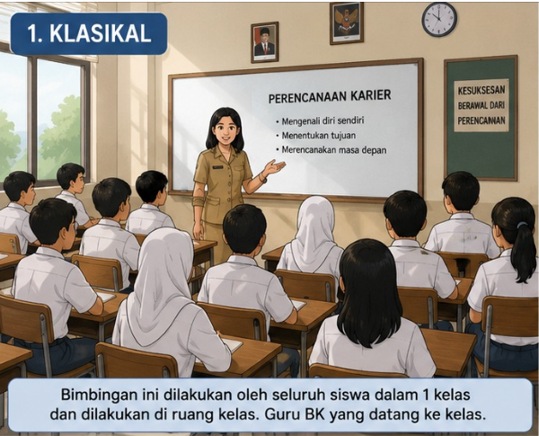
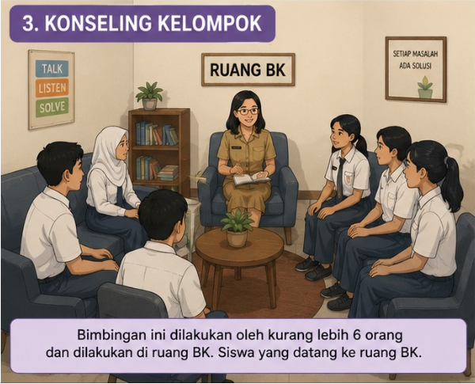
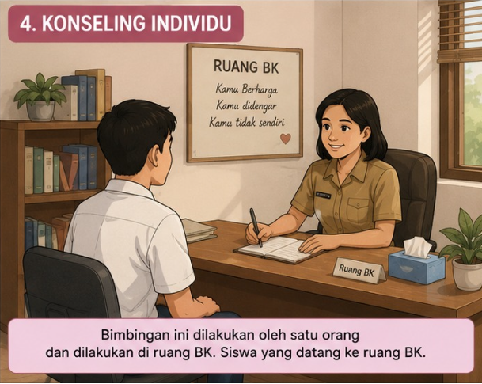

Layanan Kami
Scroll ke bawah untuk melihat seluruh layanan bimbingan konseling.

Layanan bimbingan yang diberikan kepada seluruh siswa di dalam kelas untuk membantu pengembangan karakter, motivasi belajar, disiplin, serta pemahaman tentang pendidikan dan kehidupan sosial.

Layanan yang dilakukan dalam kelompok kecil untuk membantu siswa berdiskusi, berbagi pengalaman, dan menemukan solusi bersama terhadap suatu permasalahan atau topik tertentu.

Layanan konseling yang dilakukan secara berkelompok dengan suasana nyaman dan saling mendukung agar siswa dapat mengatasi masalah pribadi, sosial, maupun belajar bersama anggota kelompok lainnya.

Layanan konseling secara tatap muka antara siswa dengan guru BK untuk membantu menyelesaikan masalah pribadi, belajar, sosial, maupun perencanaan masa depan secara lebih mendalam dan rahasia.